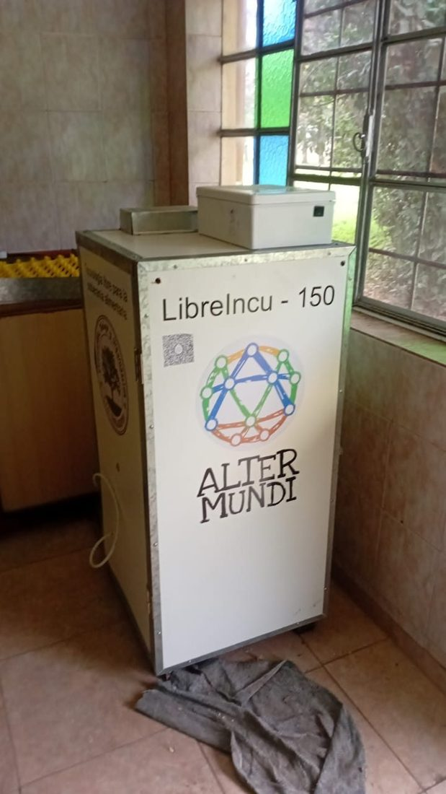
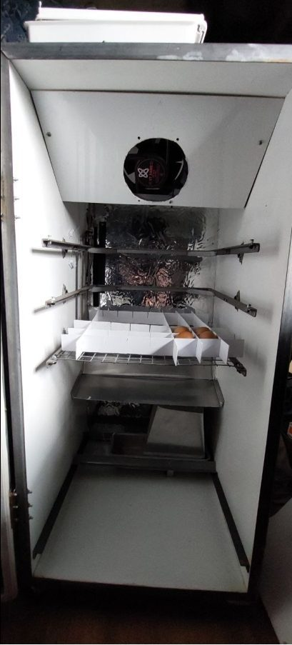
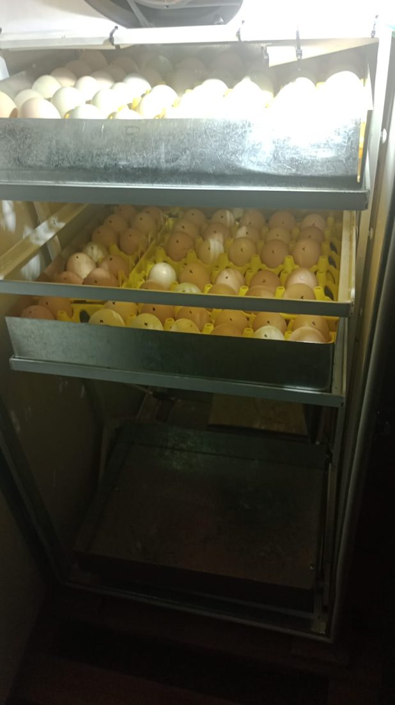
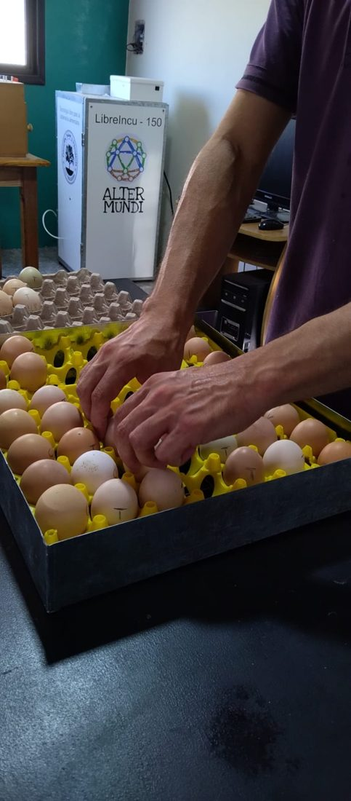

LibreIncu: incubadora libre para la producción avícola familiar
Modelo v3 · Incubadora automática para huevos de gallina
Incubá 166 huevos con temperatura, humedad y rotación automáticas, y seguí todo desde el celular.
o escribinos a libreincu@gmail.com · el 3517350189 es solo para WhatsApp
Envío y entrega: plazo y zona de envío. Garantía: quién la da, qué cubre y por cuánto tiempo. Quién fabrica, vende y factura.
Arriba, un ventilador mueve el aire caliente para que la temperatura sea pareja en toda la cámara. En el medio están las tres bandejas con los huevos: un motor las inclina hacia un lado y hacia el otro, todas juntas, para dar vuelta los huevos como lo haría la gallina. Abajo queda la bandeja nacedora, donde nacen los pollitos.
Arrastrá el modelo para verlo desde cualquier ángulo.
La LibreIncu 150 v3 mantiene la temperatura, la humedad y la rotación de los huevos, y te avisa al celular si algo se sale de lo esperado.
En tres bandejas (una de 50 y dos de 58), más una bandeja nacedora.
Resistencia de 200 W, ventilador y deflector que reparten el calor en toda la cámara.
Se carga sola desde la red de agua y un aspersor de niebla mantiene la humedad.
Un motor con tornillo gira las tres bandejas juntas, con sensores y topes de seguridad.
Con la app LibrePollo ves y ajustás los valores, y con internet guardás el historial en Grafana.
En las pruebas realizadas.
Hasta 166 huevos en tres bandejas. La incubadora mantiene sola la temperatura, la humedad y los gira.
Te conectás a la red WiFi de la incubadora y desde LibrePollo ves los valores, los cambiás y recibís avisos.
Al final del ciclo los huevos pasan a la bandeja nacedora, en el piso de la cámara.
Ver las especificaciones completas · La tecnología en detalle
Instalación, primer encendido, limpieza, controles periódicos y apagado.
Leer el manual AppPantallas, configuración WiFi, bandejas, rotación y notificaciones.
Leer el manual DiagnósticoQué revisar si baja la humedad, no sube la temperatura o no gira.
Ver la guíaLas incubadoras comerciales suelen ser inaccesibles por su costo o están diseñadas para hobbistas. LibreIncu está pensada para la escala de la producción familiar.
Para producir sus propios pollitos con la genética que elijan, sin depender de comprar el pollito bebé.
Para organizar en el territorio la reproducción de sus propias aves.
Para acompañar proyectos de producción avícola familiar y agroecológica.
Escribinos por WhatsApp si necesitás ayuda con tu incubadora.
Pedir soporte MantenimientoLimpieza, controles periódicos y apagado, para que dure muchos años.
Leer el manual DiagnósticoQué revisar si baja la humedad, no sube la temperatura o no gira.
Ver la guíaGarantía: quién la da, qué cubre y por cuánto tiempo. Soporte técnico: quién lo brinda, cómo y en qué plazos.
166 huevos en tres bandejas (una de 50 y dos de 58), más una bandeja nacedora en el piso para el nacimiento.
No para manejarla: cada incubadora emite su propia red WiFi (empieza con "incu-") y te conectás desde el celular. Con conexión a internet, además, te llegan avisos al celular y se guardan los datos históricos en Grafana.
Un lugar ventilado pero sin corrientes de aire, con conexión de agua, cerca de un tomacorriente y, en lo posible, con señal WiFi y al alcance del celular.
Viene calibrada de fábrica para huevos de gallina, a 37,8 °C. Desde la app podés ver y modificar ese valor.
Sí: usa componentes disponibles en el mercado y fáciles de reemplazar. Además, toda la documentación técnica está publicada.
Precio o rango, plazo de entrega y zona de envío.
Muestra la temperatura y la humedad dentro de la incubadora, permite modificar esos valores y avisa al celular si algo se sale de lo esperado.
Escribinos y te contamos precio, plazos y cómo llega a tu territorio.